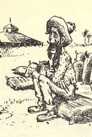
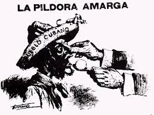
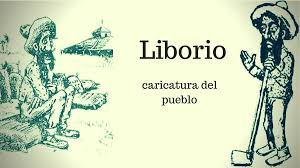

Panel que tuvo lugar durante la Feria Internacional del Libro en Camagüey, abril de 2016
María Antonia Borroto:
Nos convoca esta tarde un tema que consideramos la más urgente de la sociedad cubana actual, mas queremos verla en sus
dimensiones culturales. ¿Qué retos supone para la Cuba de hoy el llamado proceso de normalización de las relaciones con
los Estados Unidos? Es un tema que nos toca a todos, por supuesto, pero creo que a los intelectuales, a los artistas y
escritores debe convocarlos con un sentido de debate, de crítica y de análisis constante. Ese es precisamente el
derrotero que queremos para esta mesa, como para todos los Días de La Liga, con un panel bastante heterogéneo. Doy la
bienvenida a quienes me acompañan, y con el perdón del resto de mis colegas, quiero agradecer profundamente a Emilio
Cueto que haya aceptado acompañarnos, pues en su condición de residente en los Estados Unidos y por su perseverancia en
la difusión de la cultura cubana allá —algo que todos debemos agradecer— aportará una perspectiva que, obviamente, no
es la del resto de los panelistas. Y eso es muy bueno para cualquier debate de esta naturaleza. Doy la palabra a Caridad
Atencio quien nos trae un texto a propósito de la visión de los Estados Unidos y de la ciudad moderna en Martí. Acto
seguido le sigue Yoan Manuel Pico, un estudioso también de José Martí y de los Estados Unidos. Este texto, por su
extensión y por su interés, aparece publicado en la sección “El Laberinto” de este propio número de La Liga.

Yoan Pico:
Este espacio pretende dialogar sobre una problemática que, como decía María Antonia, es la más urgente de la sociedad
cubana actual y que se atizó un poco con la vista de Barack Obama. Este hecho generó innumerables artículos incluso
antes de producirse y, por supuesto, los continúa generando aun después de producido, de esos escritos concebidos
antes de la llegada recuerdo uno de Victor Fowler, se refería a la visita utilizando una frase con la que Fidel Castro
definía a la propia Revolución: “una posibilidad más grande que nosotros mismos”, pues bien Victor Fowler veía en la
visita de Obama eso, una posibilidad que trascendía el hecho de la propia visita y eran dos sistemas que hasta ese
momento habían sido irreconciliables y se iban a dar la mano y eso iba a generar un ejemplo, podía generar una
posibilidad para un mundo que necesita eso. El hecho remueve a una nación como esta que durante mucho tiempo construyó
su discurso político sobre la base de una polaridad que, al romperse obligaba a reformular ciertas cosas. El
acontecimiento me obligaba a recordar un fragmento de Nuestra América: “Pero otro peligro corre acaso Nuestra
América y es la hora próxima en que se le aproxime demandando relaciones íntimas el vecino formidable que la desconoce
y la desdeña”. Para Martí el reto más difícil está en el contacto. Recuerdo también a algunos enemigos acérrimos de la
revolución, incluso a ese abuelito que pudo estar en cualquier familia cubana. Mi propio abuelo lo decía: lo que tiene
que hacer Estados Unidos es levantar al bloqueo, para él esa acción sería como el Jaque Mate en el ajedrez. Bueno pues parece
que el enemigo oyó consejo y reformuló su política, lo dijeron desde los primeros contactos: “no venimos a dar la mano,
comprendimos que la política anterior no funcionaba y vamos a hacer otra política, pero con los mismos objetivos”.
Este gesto nos obliga a reformular nuestro discurso, nuestra visión de los Estados Unidos, esa visión ya no debe ser una
visión maniquea, no lo debe ser. Sin embargo algunas personas no captan la señal de los nuevos tiempos y de la urgencia
de un discurso distinto. Para estructurar ese discurso, Caridad puede darme la razón, la visión martiana de los Estados
Unidos resulta imprescindible porque nunca fue maniquea, nunca fue una visión de un solo color, aunque a veces lo pareciera.
Ayer en otro día de la liga hablábamos de la educación y nuestro sistema educacional jugó un papel importante en esto pues
de una forma pragmática y astuta se dedicó a seleccionar aquellos textos martianos que ofrecían una visión más conveniente
sobre esa realidad. A tal punto es así que hoy usted llega a una secundaria y le pregunta a un estudiante dígame algún
criterio de Martí sobre los Estados Unidos y le dicen: “Viví en el monstruo y le conozco las entrañas”. Pero bueno, Martí
es tan generoso que nos da la posibilidad de enmendar nuestro error, no hay más que ir a las propias Escenas
Norteamericanas y escucharemos al Apóstol catalogar la experiencia de los Estados Unidos con las siguientes
palabras: “Se vive como en un astro”. Sin dudas, Martí se obsesionó por dar una visión objetiva del proceso que estaba
viviendo. Era un adversario inteligente, por eso, teniendo intereses políticos con respecto a ese proceso, sabía que la
realidad era tan compleja que no se podía simplificar. Ceo que el propio prólogo de La Edad de Oro nos muestra lo que
Martí está viendo de positivo en la sociedad estadounidense, con ese convite al niño para enseñarle “la magia que ocurre
en los talleres que es mucho más provechosa que la otra porque es magia de verdad”. Nada de eso hubiera sido posible sin
la experiencia norteamericana y sin lo que el encontró de útil allí. Entonces me parece que esto sigue siendo una brújula,
Martí nos la está dando y de ella no debemos desprendernos en el análisis que hoy hacemos de la realidad norteamericana.
Lamentablemente, lo debo confesar así, los analistas que hoy trabajan en los medios que son los analistas que pesan porque
lo que pueda decir Rene Fidel en su libro no decide, decide lo que pueda decir Esteban Morales en una Mesa Redonda o lo
que pueda decir Reynaldo Taladrid. Pero me entristece mucho que en esos criterios que hoy se vierten sobre la realidad
norteamericana, la palabra de Martí esté ausente. Esos analistas que son los encargados de trasmitirle al cubano de a
pie un retrato de la sociedad estadounidense parecen omitir el retrato más fiel de esa sociedad, que es el retrato
martiano. Así, cuando una mesa redonda se dedica a analizar el fenómeno electoral norteamericano y lo que podría ser su
hipotética final de este año entre Donald Trump y Hillary Clinton casi nunca recurre a las Escenas Norteamericanas,
hecho inexplicable sobre todo si tenemos en cuenta que de darse esta contienda se estaría repitiendo la que escenificaron
en tiempos de Martí Grover Cleveland y Arthur Blaine. No por gusto, al analizar a este último político el Apóstol nos habla
de un hombre de una “fe indómita en sí mismo” al que nada “deprime” ni “abate”, cualidades que según el cubano son importantes
para captar la simpatía de un pueblo que admira los hombres fuertes. Por supuesto estas expresiones martianas nos recuerdan
mucho a Donald Trump cuya forma de comportarse en la contienda electoral ha dado origen a lo que muchos especialistas
denominan “efecto teflón”, es decir, todo le es indiferente, usted puede decirle las verdades más terribles que el permanece
impasible sin perder esa imagen de seguridad. Por tanto cuando digo que las Escenas Norteamericanas no han perdido ni gota
de actualidad lo digo con un total convencimiento. Entonces cualquier análisis que realicen los prestigiosos especialistas
antes mencionados sobre la realidad estadounidense no es una opción, es una obligación, sobre todo si usted quiere dar una
visión objetiva del fenómeno y más que eso, respetuosa de nuestra tradición cultural.
María Antonia:
A mí me llamaba muchísimo la atención la cobertura mediática que se le dio a la visita de Obama; casi podríamos decir
que se trató, en algunos momentos, de una “descobertura”, pues recuerdo a Obama aterrizando y trasladándose por la
Habana Vieja mientras se mostraban por la televisión reportajes sobre los edificios de la Habana Vieja. De pronto
nos acordamos de Henry Reeve (tres veces se transmitió un documental sobre Henry Reeve) y resulta ser que, según
esta cobertura, los nexos culturales con los Estados Unidos son a partir de Hemingway. Vamos, esa simplificación
tan burda y tan tendenciosa de nuestra propia cultura me parece completamente nefasta. No puedo dejar de pensar en
Martí y en un proyecto como La América, una publicación que pretendía ser un espacio de encuentro, de unión
entre ambos ámbitos conformadores al fin de cuentas de la América, para exponer todas las mejoras y todo lo que podría
ayudar a nuestros pueblos para entrar de una manera diferente en la modernidad, al tiempo que un espacio para que los
pueblos de América se mostraran, sin complejos de ninguna índole. Pienso que este podría ser también uno de los secretos,
desde el punto de vista publicístico, de la manera de abordar este fenómeno.
Norteamericanos con los que conversado se sorprenden con el nivel de actualización que tenemos respecto a ciertas
realidades de ese país. Recuerdo a dos primas mías, por ejemplo, asombradas porque que Titanic se viera aquí casi al mismo
tiempo de su estreno en Estados Unidos. Cualquiera de los aquí presentes podría poner muchos otros ejemplos al respecto.
Juan Antonio García Borrero habla de esto como de un Caballo de Troya, como tal ve la difusión de cierta zona de la
cultura norteamericana, que no es, por cierto, la más feliz. Ha habido una posición de franco enfrentamiento desde el
punto de vista político y al mismo tiempo hemos estado consumiendo de forma pasiva muchos de sus patrones culturales.
Las contradicciones son abismales. Una persona que en cierta etapa de su vida dirigió una organización cubana me decía,
en una conversación privada —por eso no revelo su nombre—, que la programación informativa de la televisión cubana
parece administrada por la KGB, y la recreativa, por la Fundación Cubano Americana: este sinsentido se aprecia al
analizar la parrilla de la programación de le televisión cubana.
Me siento muy feliz de no trabajar ya en los medios de comunicación: puedo imaginar —pues la sufrí muchas veces— la
presión a la que deben estar sometidos los periodistas que han dado cobertura al llamado proceso de normalización de
las relaciones con los Estados Unidos. No es culpa de ellos: cometer un error, o sea, hacer algo que ciertas esferas
del poder consideren un error puede significar un asunto hasta de supervivencia en el plano simbólico. Tengo otras
cosas por decir y pienso que podríamos planificar otros paneles porque son muchas las cuestiones que podríamos discutir.

Lionel Valdivia:
No es que ciertamente llevamos muchos años hablando de esto, a veces uno piensa que demasiado tiempo. Hay algo que tengo
claro y que realmente me entristece: el tamaño de la inteligencia que hay que tener para comprender cómo pueden ser
las relaciones con los Estados Unidos, entendiendo eso vamos a decir de antemano que no hay una inteligencia cercana que
nos pueda dar la luz, en la contemporaneidad de la manera en la que nos vamos a relacionar con la nación del norte y
eso me entristece un poco. Este proceso de entendimiento no es algo que se le dé a cualquier de una manera fácil, sino
que se necesita algo extra, un plus extra para poderlo entender y ya eso explica unas cuantas cosas. Lo otro, y voy a
referirme al ámbito cultural porque es el que me interesa, aunque como se dijo también ayer aquí todo es cultural es
el fenómeno del recambio desde el punto de vista del análisis de la situación. Yo estaba revisando un libro que mi
madre me hizo el favor de traerme a raíz de esto que es la cronología de los hechos Cuba Estados Unidos, ahora no
recuerdo el título, soy muy malo para los títulos, pero lo que sí me queda claro es que el recuento de esa cronología
no es un recuento que empieza con el siglo 20, no es ni siquiera el recuento de un diferendo que arranca desde hace más
de medio siglo, los problemas de tensión son anteriores incluso, Pico decía una cosa: lo que somos culturalmente o una
parte de lo que somos culturalmente se ha construido sobre la base de escenificar esa tirantez, no sé cuán lejos
podremos llegar cuando esa tirantez no exista, aunque siempre va a existir. Desde el punto de vista cultural, no
estoy diciendo político, pero desde el punto de vista cultural siempre va a existir porque son maneras diferentes de
ver la cultura. Pero me interesa este discurso que me es más cercano por ser posterior al cincuenta y nueve, creo que
hay una diferencia que puede tener un impacto cultural muy grande por no decir terrible, o demoledor. Primero porque
cuando este discurso se empieza a construir hay una visualización de que estamos viviendo un proceso infinito y eso
condiciona las maneras de dialogar con aquel que es nuestro principal oponente. No voy a utilizar la palabra, y allí
después Pico y yo tendremos otras conversaciones, no voy a utilizar la palabra enemigo. Voy a utilizar la palabra
oponente. Es decir, en ese momento, hay una serie de reglas culturales que se establecen en función de entender el
proceso revolucionario como infinito. Con la llegada de los noventa la historia nos demostró que los procesos tienden
a ser finitos, a reciclarse, a volverse a ver. Vivimos un proceso que ha impactado lo cultural cubano de una manera
muy fuerte y de momento se nos está pidiendo que entendamos esto desde una concepción nueva y desde las potencialidades
del nuevo proceso que vivimos. Es decir, todo es finito y eso condiciona la manera de ver cómo vamos a relacionarnos
con el oponente. Yo creo que también en la visita de Obama eso saltó a la luz pública. Hay muchas personas que al igual
que el abuelito de Pico dijeron hay que quitar el bloqueo, hay muchos que también dijeron oh, si esto hubiera sido estando
Fidel en el poder, sobre todo por lo que hubiera representado desde el punto de vista cultural, ese primer acercamiento
se dio de otra manera.
Hay ciertas cosas que acechan, ciertas cosas que aunque una y otra vez se digan creo que son verdades en las que hay
que pensar. Primero las asimetrías, hasta los países más poderosos pueden sentir el peso de la asimetría en su relación
con los Estados Unidos, un país como Rusia fuerte no solo económica sino culturalmente, siente el peso de la
asimetría. Un país como Japón, que ha construido una potencialidad económica, pero que se aferró por años a su
cultura, ha sentido el choque con lo norteamericano en las bases más profundas de su identidad. Eso no lo inventé
yo, eso lo dicen los estudiosos. Voy ahora a poner una más fea, nosotros llegamos, como llegamos a todo porque eso es
típico de los cubanos también con un retardo, hoy los pensadores latinoamericanos, por poner un ejemplo ya están de
vuelta, en el análisis de lo que representa para sus culturas el influjo de lo norteamericano, en lo bueno y en lo malo.
Pasarán muchos años amigo mío para que nuestro análisis de la sociedad estadounidense tenga un impacto.
Y lo último que voy a hablar es sobre lo que ha representado la resistencia para la cultura cubana. Sí es cierto que
ha habido una noción de resistencia social que repercute en la cultura, también a mi modo de ver hay un elevado criterio
de ficcionalización sobre esa resistencia que nos ha hecho rechazar la verdad. Voy a poner un ejemplo concreto. Se
ha hablado tanto del bloqueo que el pueblo cubano en su inmensa generalidad no cree que el bloqueo exista. Conversando
con la mujer mía hace más de un año cuando lamentablemente a su ahijada se le diagnostico la leucemia y chocábamos
con ciertas cosas de los medicamentos, yo le decía. Lo que pasa es que se hablado tanto, se ha tendido a construir
una épica de donde no se debía construir una épica que ha terminado yéndonos muy mal y ha terminado yéndonos muy mal
también en lo cultural. La cultura entre otras cosas se asimila por ósmosis. Lo que sucede hoy con nuestra televisión,
con nuestra percepción de la cinematografía. Lo que sucede hoy entre muchos escritores que empiezan a entender
paradójicamente como un mercado natural los Estados Unidos, ¡un país que habla otro idioma!, es también fruto de eso.
Yo lamentablemente no creo que estemos preparados. Leía preparándome para este panel, algo muy triste, un debate de la
revista Temas, el jueves de temas y creo que era Elmo Hernandez el que decía: “en los años cincuenta Cuba era el más
norteamericano de los países latinoamericanos”, y recalcaba, “pero es más triste todavía en el 2016 Cuba sigue siendo
el más norteamericano de los países latinoamericanos”. Voy a terminar con esto: yo creo que la significación que tiene,
no se rían ahora de lo que voy a decir, al amigo aquí me entenderá y le suscitará posiblemente alguna sonrisa, el
significado simbólico que hoy tiene para la cultura cubana, cultura en todos los sentidos incluido el popular, el
yuma, ninguna otra noción es capaz de desplazar eso, eso además que para una parte importante de nuestra población es
una inmensa alegría: entender el yuma, entender el yuma no como algo simbólico, sino como algo posible se convierte en
mi caso en una de las más terribles tristezas, aunque yo también en algún momento quisiera vivir ese yuma y entender
la vida desde otras perspectivas que son, por mucho liberadoras, esas son las cosas que quiero decir. Vamos a darle la
palabra ahora a Emilio Cueto.
Emilio Cueto:
En mi historia personal hay algo que me distingue un poco de la trayectoria vital de mis colegas: el día 26 de este mes
hace 55 años que vivo en los Estados Unidos y regresé a Cuba por primera vez en el año 77, ya llevo 55 allí y casi
40 acá. O sea, que eso me ha permitido tener una experiencia muy cercana de ambas realidades. Acabo de terminar un
libro que saldrá me imagino este año sobre la presencia de Cuba en los Estados Unidos. En el transcurso de ese estudio
realizado a través de objetos e imágenes, me llamo la atención el profundísimo impacto de Cuba en los Estados Unidos,
todos sabemos el impacto que los Estados Unidos tuvo en Cuba porque hemos nacido con todas esas historias, pero realmente
llama la atención, a mí me llamó mucho la atención, la cantidad de presencias cubanas que hemos tenido en Estados Unidos
y voy a mencionar cinco o seis: el primer libro de poesía cubano se edita en Nueva York en 1825 y pertenece a
Heredia, Cecilia Valdés se edita en Nueva York, “el sol bueno y mar de espuma” no es en Jaimanitas, estamos
hablando de cosas que están en nuestro ADN y que ocurrieron allá, Martí conoce a Maceo y a Máximo Gómez en un hotel
de la calle nueve en Nueva York, no es en Guanabacoa, no es en los campos de Cuba libre, es en Nueva York, o sea
nuestra presencia en Estados Unidos es tan eterna. El fundador del periódico más importante de Carolina del Norte
es Ambrosio González, Félix Varela escribe nuestro primer periódico latinoamericano en Filadelfia, el primo de Félix
Varela que era un músico y además profesor, totalmente desconocido en Cuba lamentablemente, fue uno de los pioneros
de la enseñanza del español en Nueva York, la primera guía en español de la ciudad de Nueva York la hizo Antonio
Bachiller y Morales… la lista es tan eterna, además nuestra vecindad no es una vecindad de noventa millas, México
está más cerca de Estados Unidos, porque hay fronteras, no hay ni una milla, sin embargo estamos mucho más cerca porque
estamos cerca de las líneas de comunicaciones con Nueva York y con Baltimore, los mexicanos están unidos a arena, a
desierto, nosotros estamos unidos a los centros culturales más importantes, o sea que no son noventa millas, son menos
todavía. Eso explica la presencia de esos famosos artistas que vienen a Cuba, que si Sara Bernhard que si Jeni Lin,
venían porque salir de Nueva York a Cuba era más fácil que hacerlo desde cualquier otro estado de la Unión. En fin, no
se trata de noventa millas, nuestro Escudo nacional tiene un trozo de Estados Unidos, nuestra bandera se pinta en Nueva
York y la izan en Nueva York antes que en Cárdenas. O sea, nuestras historias están íntimamente ligadas y la presencia
nuestra en los Estados Unidos es muy profunda y se remonta a varios años. Pero lo otro que quería decir es una cosa que
he ido pensando mucho a través de mi vivencia personal, es una verdad de Perogrullo y no estoy inventando nada, el 16
no es el año 59, ni Cuba es la misma ni los Estados Unidos son los mismos, por no decir el mundo. Pero lo más importante
que quería decirles se relaciona con la emigración de 1.9 millones de cubanos hacia los Estados Unidos. Cuando en el
censo de ese país se hace la pregunta: ¿Qué cosa es usted? Muchas personas se autodenominan cubanos a pesar de haber
nacido allá y lo hacen porque sienten que su primera identidad es cubana. Ya los Estados Unidos no son ellos, ya son
nosotros. En el año 59 Estados Unidos eran ellos y yo era yo, pero ahora mi ahijada, mi primo, mi madre, mi tío son
americanos. Ya esa distinción entre ellos y nosotros no es tan fuerte: las remesas, los viajes, el intelectual que
puede viajar porque un amigo le consigue un permiso, las cartas de invitación, esto yo creo que cambia para siempre
la relación entre Cuba y los Estados Unidos. El hecho de que existan tantas personas tan cercanas a nosotros que son
parte de aquello, ciudadanos americanos que además votan en las elecciones de allá que a su vez tienen implicaciones
con el futuro de las relaciones, hace que estemos en una situación muy distinta, hay que pensar lo que ello significa
y realmente es un reto para ambas naciones y para ambas comunidades.

Yo soy optimista, la cultura cubana es muy sólida, tan sólida que nosotros la hemos replicado allá, a diferencia de
otras comunidades no hemos caído en el caldero que se deshace en un making post mayor, sino que somos un
enclave que hay que aceptarlo, usted camina por Miami y se encuentra al Caballero de París. Los americanos han tenido
que aceptarnos. Se dice que cuando los americanos fundaron la colonia La Gloria hubo muchas quejas porque las calles
se llamaban MacKinley, Jeferson, bueno es lo mismo que hicimos en Miami nosotros, yo recuerdo un titular que leí hace
años en el Miami Herald: “Pérez agrede a Pérez y lo juzga Pérez”, o sea el ladrón, la víctima y el juez, todos
eran Pérez. Sencillamente hemos generado un impacto muy profundo. Yo no le tengo miedo, aunque sí, entiendo la
presencia de lo norteamericano y me asombra la cantidad de cosas norteamericanas que veo, sin embargo la cultura
cubana es muy fuerte y superará la avalancha y la invasión. Soy optimista y me alegra mucho porque mi historia
personal ha estado en función de acercar a los dos países en los que me ha tocado vivir. Soy ciudadano de ambos.
No olvido la historia porque no se puede olvidar, pero no voy a hacer énfasis en la Enmienda Platt, no voy a mirar
para atrás, voy a mirar a lo que hemos adelantado, y sí creo, soy muy optimista.